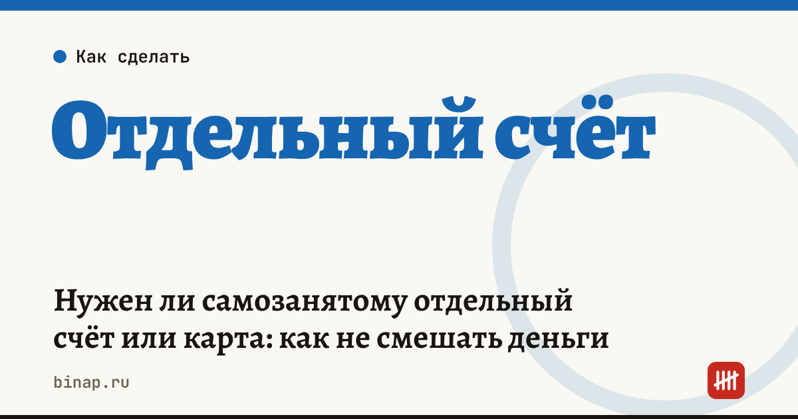

Нужен ли самозанятому отдельный счёт или карта: как не смешать деньги

Отдельный счёт самозанятому не обязателен: закон № 422-ФЗ этого не требует. Но если доход приходит на ту же карту, что и личные переводы, легко забыть про чек, ошибиться с налогом и получить вопросы от ФНС. Отдельная карта для дохода решает эти проблемы почти бесплатно.
Коротко
- Чек нужно выдать в момент расчёта, если платят наличными или электронными средствами. При других безналичных расчётах — не позднее 9-го числа следующего месяца (ч. 3 ст. 14 закона № 422-ФЗ).
- Налог: 4% с доходов от физлиц и 6% — от ИП и компаний (ст. 10). Платить его нужно до 28-го числа следующего месяца (ч. 3 ст. 11).
- Лимит дохода — 2,4 млн ₽ в календарный год (п. 8 ч. 2 ст. 4).
- Не все поступления — доход: например, продажа личных вещей и деньги по трудовому договору налогом на профессиональный доход не облагаются (ч. 2 ст. 6).
- ФНС проверяет аннулированные чеки. За 9 месяцев 2026 года за неправомерное аннулирование наказали около 3 000 самозанятых на сумму около 300 млн ₽ («Ведомости»).
Сроки, изменения и разборы для ИП и самозанятых — каждое утро в Telegram и MAX. Подпишитесь, чтобы не пропустить.
Что это значит
Когда на одну карту приходят и оплаты клиентов, и переводы от родственников, возникают три риска:
- Пропущенный чек. Клиент перевёл деньги, чек забыли пробить. За сокрытие дохода самозанятого штрафуют на 20% от суммы операции, за повторное нарушение — на 100% (по словам представителя ФНС в «Ведомостях»).
- Лишний налог. Если по ошибке выбить чек на личный перевод (например, от брата в долг), налог придётся заплатить с денег, которые доходом не были. А если аннулировать чек «по привычке», ФНС может заинтересоваться.
- Вопросы о регулярных переводах. Минфин предложил ко второму чтению законопроекта № 617-9 обязать ЦБ передавать в ФНС сведения о людях, которые систематически получают деньги от физлиц. Тогда налоговая сможет запрашивать выписки по их счетам. Если поправку примут, норма заработает с 1 января 2027 года и коснётся операций с 1 января 2026 года («Коммерсантъ», 13.11.2026). Решения пока нет.
Если весь доход приходит на отдельную карту, выписка по ней и чеки в «Моём налоге» совпадают. Объяснить налоговой каждый перевод в таком случае легко.
Что сделать сейчас
Чек-лист: как разделить деньги за вечер
- Откройте отдельную карту или счёт только для дохода от клиентов. Личные переводы на неё не принимайте.
- Выбивайте чеки в приложении «Мой налог» или через банк, если он уполномоченная кредитная организация (ч. 1 ст. 14 закона № 422-ФЗ). Тогда проще не пропускать чеки.
- Дайте клиентам реквизиты только этой карты: в договоре, счёте, ссылке на оплату.
- Раз в неделю сверяйте поступления на карту с чеками в «Моём налоге».
- До 28-го числа заплатите налог за прошлый месяц (ч. 3 ст. 11).
- Следите, сколько осталось до лимита 2,4 млн ₽ за год. При доходе около 200 000 ₽ в месяц вы дойдёте до лимита в декабре (расчёт редакции: 2 400 000 ÷ 200 000 = 12 месяцев).
Если чек всё-таки выбили с ошибкой, исправляйте его по инструкции «Чеки самозанятого: частые ошибки и как их исправить». Почему нельзя аннулировать чеки без причины, мы разбирали в статье «ФНС ищет самозанятых по отменённым чекам». Если доход растёт и лимит близко, сравните варианты в статье «Самозанятый или ИП на патенте».
Частые вопросы
Можно ли принимать оплату на обычную личную карту? Можно: закон не требует отдельного счёта. Главное — на каждую оплату за товар или услугу выбивать чек в срок (ст. 14 закона № 422-ФЗ).
Нужно ли пробивать чек на перевод от родственника? Нет, если это не оплата ваших товаров или услуг. Налогом облагаются доходы от реализации товаров, работ, услуг и имущественных прав (ст. 14, 6 закона № 422-ФЗ).
Что если клиент-компания платит на расчётный счёт? Это безналичный расчёт, поэтому чек можно сформировать до 9-го числа следующего месяца (ч. 3 ст. 14). Ставка налога — 6% (ст. 10).